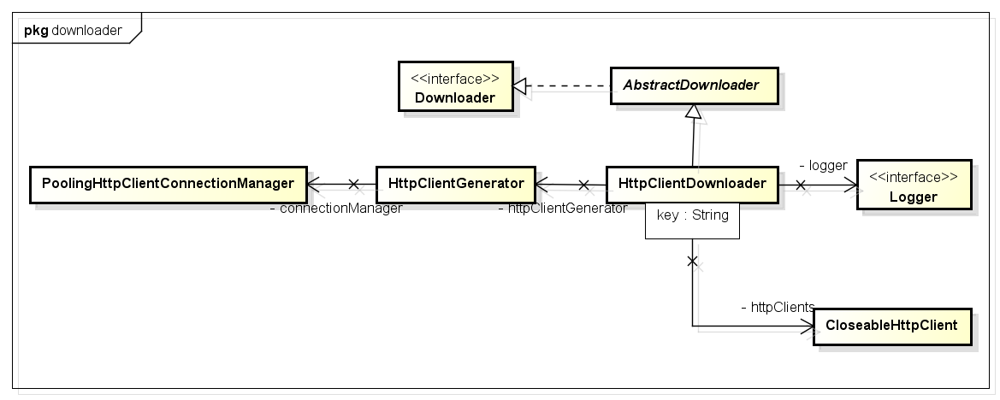

- Introduction
- 1. [JAVA基础]
- 2. [JAVAIO]
- 3. [多线程]
- 4. [网络编程]
- 5. [JAVAEE]
- 6. [设计模式]
- 7. 思考
- 8. TODO
- Published using GitBook
webmagic类分析
爬虫流程分析
爬虫的要素：1.调度器schedule 2.分析器processor 3.处理器pipeline 4.初始的种子
Spider
Spider中的方法，返回值都是Spider，这样做的原因是可以进行链式的调用。
Spider的run方法主要其实就是调用了一个方法processRequest(requestFinal)，这个方法的作用是对request进行处理，使用download进行下载，存放到page中，并用pipeline处理page。
Page page = downloader.download(request, this);
page
Page类将Downloader下载下来的HTML进行了封装，除了原始的HTML信息，还保存了原始请求Request，通过网页分析得到的新的targetList<Request> targetRequests，statusCode，String rawText，等信息。
page中的STATUS_CODE，主要是用来进行代理的处理。
Processor
Processor是个性化爬虫，改动最大的一个组件。如何处理网页，如何分析网页，都是需要我们自己进行定制的。
public Site getSite() { return Site.me().setRetryTimes(3); } 如何设置重复抓取次数
Pipeline

一个Request对应一个ResultItem ，ResultItem可以设置自己是否为可以skip的。
ResultItems 中为啥用用linkedhashmap
Downloader

Q:HttpClientDownloader l52 单例模式下的同步块。 HttpClientGenerator 是干嘛的。
Scheduler
 Schedule接口是对url 的管理，他有两个方法，分别为Poll(将url分配给spider线程)和Push(将一个url放入spider的抓取队列)。
Schedule接口是对url 的管理，他有两个方法，分别为Poll(将url分配给spider线程)和Push(将一个url放入spider的抓取队列)。
MonitorableScheduler：此接口继承自Scheduler接口，只是多提供了一个可以计数的功能。在此接口中，提供了方法，可以查看总共的request数目和剩余的request数目。
DuplicateRemovedScheduler：是一个抽象类，该类实现了Scheduler的接口。该类增加了去除重复url的功能，并只将不重复的url推送出去。
QueueScheduler：该类中，实际上只有一个LinkedBlockingQueue的成员变量。其他的方法，均是对该成员变量的操作。
CountableThreadPool
用java.util.concurrent.ExecutorService实现的一个线程池,有两个特性:
- 当线程池满的时候(alive的线程比线程池的num数量大的时候),停止进入
- 可以计算出alive的线程数量
该类的execute方法,在各种判断后,实际执行的是executorService.execute()方法。
webmagic使用
用正则表达式来匹配url：
page.getUrl().regex(URL_POST).match()添加要爬取的页面
page.addTargetRequests(page.getHtml().links().regex(URL_LIST).all(), 1);元素的抽取 ` Html tempHtml = Html.create("
"+questionList.get(i)+"
");String comment = tempHtml.xpath("//td[@class='title']//a/text()").toString();`返回所有的结果： List
questionList = html.xpath("").all() 字段的抽取：String createTime = tempHtml.xpath("//td[3]/text()").toString();
框架思想：http://progressdaily.diandian.com/post/2013-07-21/40050719031